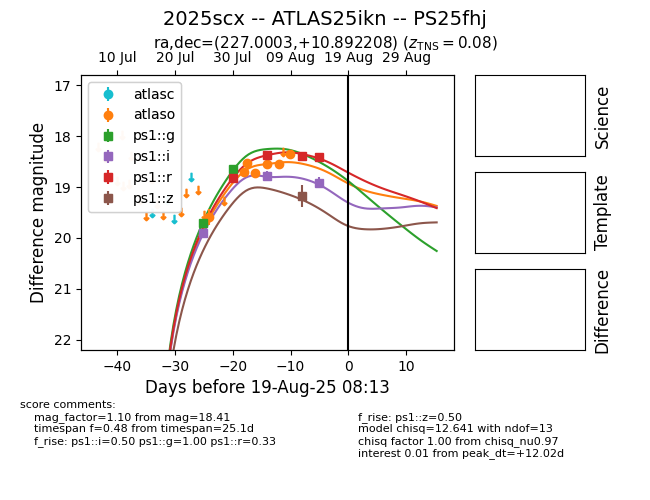

Target 2025scx at 2025-08-19 17:28, see:
TNS: wis-tns.org/object/2025scx
YSE: ziggy.ucolick.org/yse/transient_detail/2025scx
alt names
2025scx (yse,tns)
PS25fhj (panstarrs)
ATLAS25ikn (atlas)
coordinates:
equatorial (ra, dec) = (227.0003,+10.89221)
galactic (l, b) = (12.7635,+54.04721)
photometry
last atlaso=18.64, ps1::g=18.65, ps1::i=18.91, ps1::r=18.41, ps1::z=19.18
8 atlaso, 2 ps1::g, 3 ps1::i, 4 ps1::r, 1 ps1::z detections
